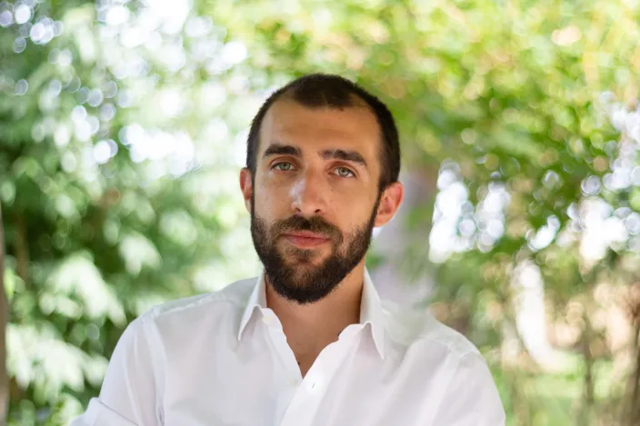
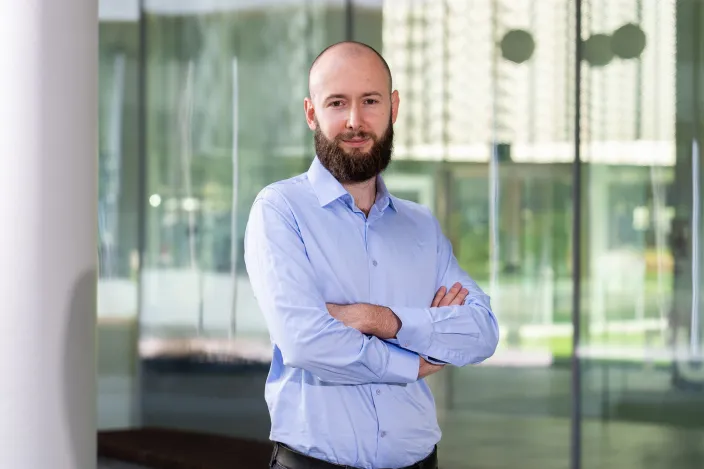
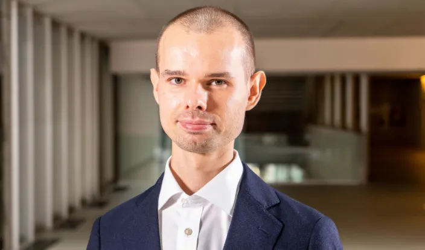
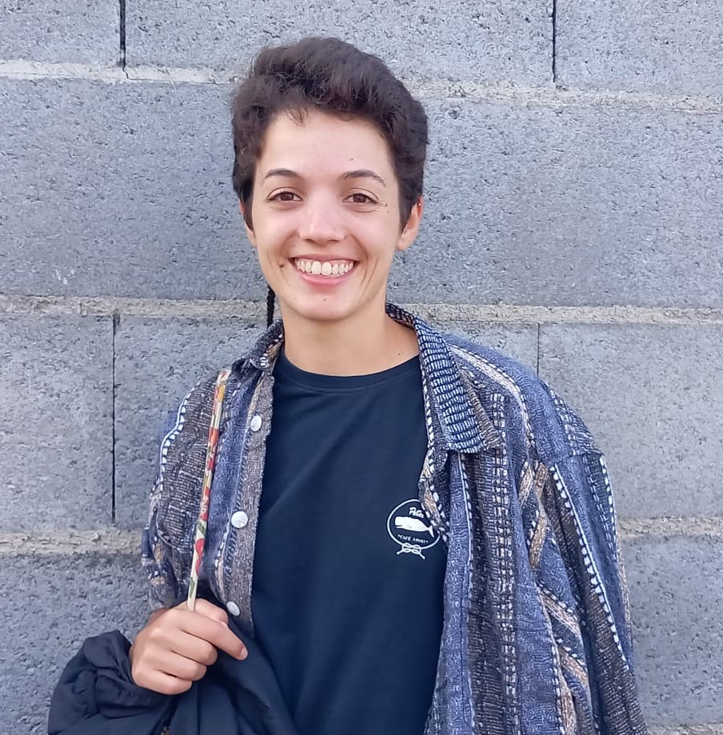
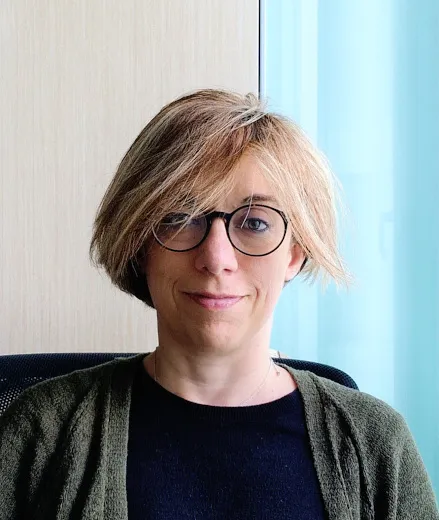
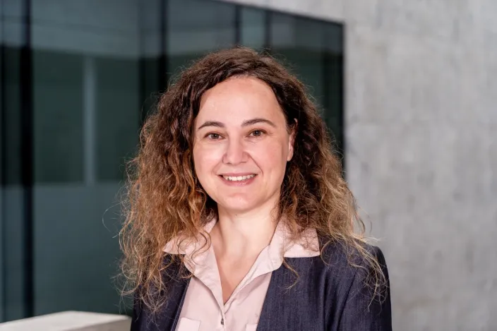

Assistant Professor
Andrea Celli
Game theory, online learning & optimization
andrea.celli2@unibocconi.itBocconi University · Milan, Italy
Fundamental questions.
New connections. High-energy ideas.
We study the mathematical foundations of computation, from efficient algorithms to the security of our digital world.
Meet the groupOur research
Our work brings together theoretical computer science, mathematics and cryptography. We explore how to solve problems efficiently, understand computational limits, and build secure systems.
The group
12 researchers.
A shared curiosity.

Assistant Professor
Game theory, online learning & optimization
andrea.celli2@unibocconi.itPostdoctoral Researcher
Bocconi University
jeffrey.champion@unibocconi.itMarie Skłodowska-Curie Postdoctoral Fellow
Lattice-based & post-quantum cryptography
valerio.cini@unibocconi.it
Assistant Professor
Graph theory & probabilistic combinatorics
nemanja.draganic@unibocconi.it

Postdoctoral Researcher
Secure computation & privacy-enhancing technologies
mariana.gama@unibocconi.itAssociate Professor
Cryptography, security & quantum computing
giulio.malavolta@unibocconi.it
Associate Professor
Secure computation & cryptographic protocols
emmanuela.orsini@unibocconi.it
Full Professor
Combinatorial optimization & approximation algorithms
laura.sanita@unibocconi.itLet’s connect
Interested in our work? Get in touch with a group member, explore the department, or join a seminar.
Department seminarsDepartment of Computing Sciences
Bocconi University
Via Roentgen, 1
20136 Milano, Italy